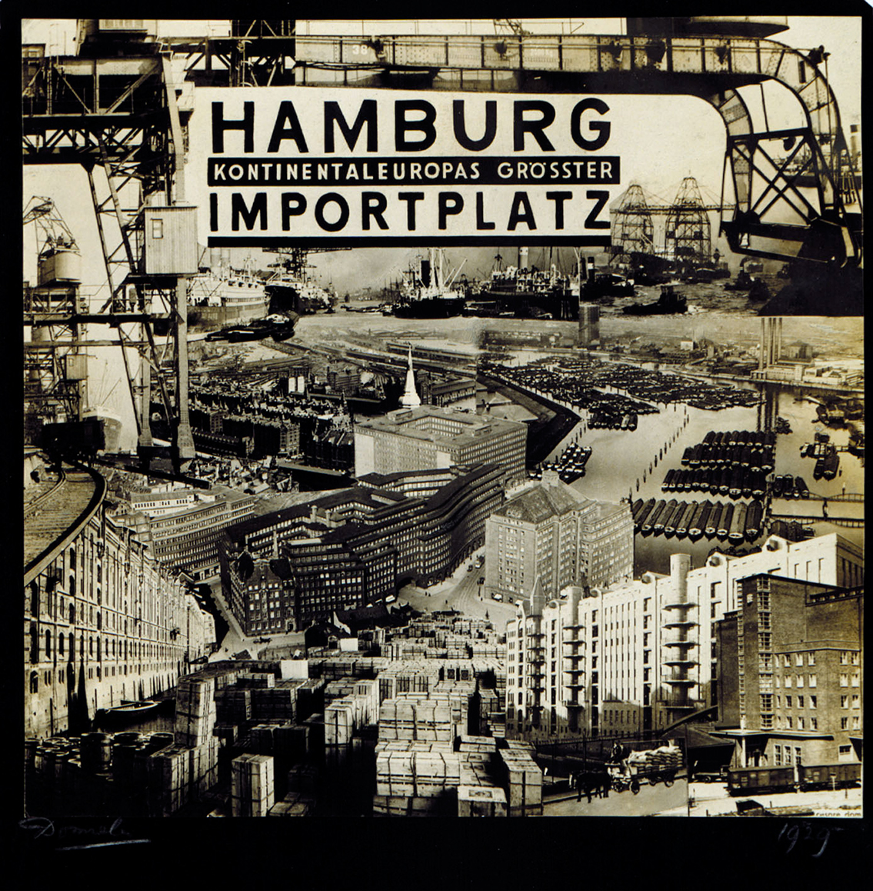
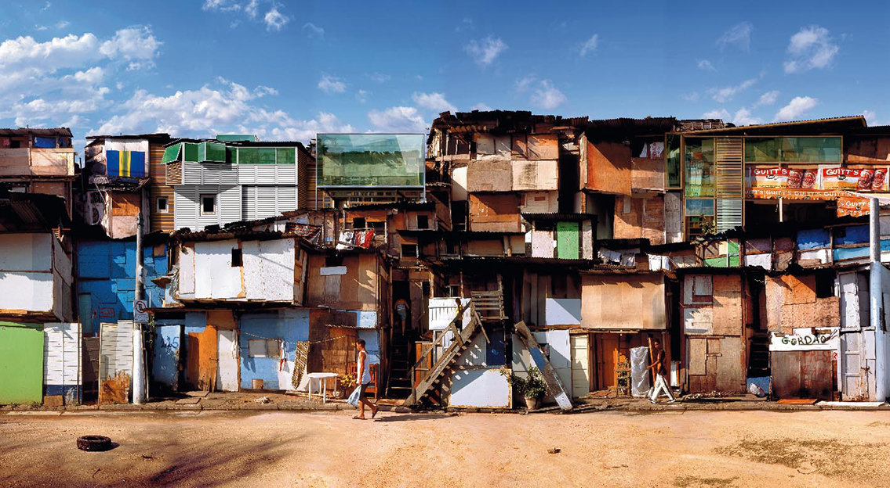
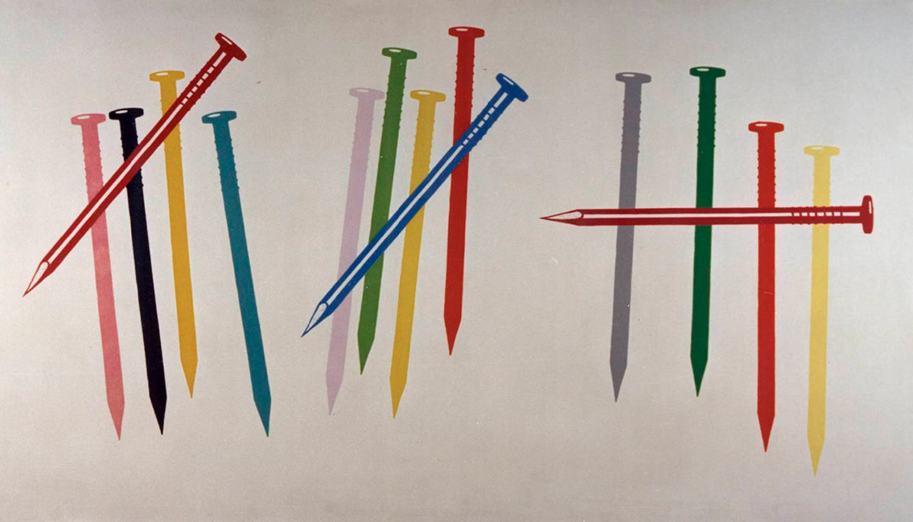
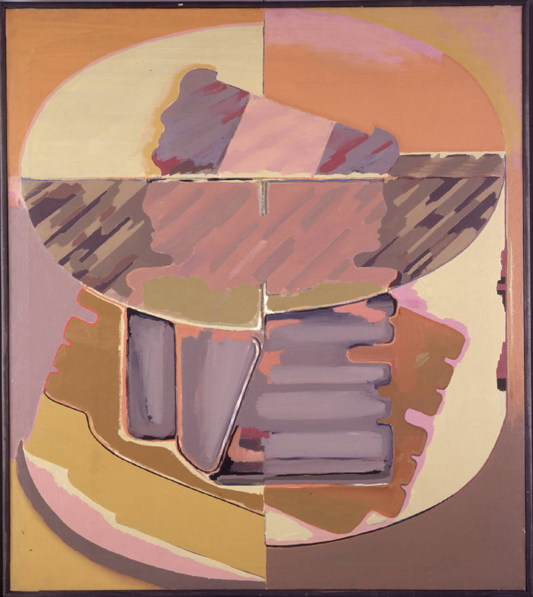

Cartografías Urbanas
Este eje tiene la pretensión de estructurar tanto el conjunto de obras que desde el inicio de la Modernidad a principios del siglo XX hasta la actualidad posee la colección del IVAM, como profundizar en el gran número de artistas que en la actualidad están trabajando sobre el mismo tema. Se trata de las aportaciones que, desde la fotografía, la la pintura, la escultura o el video se han acercado al espacio urbano o al debate sobre la relación entre el espacio público y privado como centro neurálgico de las diferentes prácticas artísticas y sociales. Ahí está el caso de, por ejemplo, César Domela, Paul Citroen, George Grosz, Horacio Coppola, William Klein, Lee Friedlander, Gordon Matta Clark, Guillermo Kuitca, Gabriele Basilico, Hannsjörg Voth, Marjetica Potrc o el valenciano Miquel Navarro.


Contemporaneidades
1980-2010
Un conjunto de artistas llevan años trabajando con dispositivos tecnológicos en analizar de qué modo la revolución digital es un hecho que está presente en nuestra vida cotidiana y altera considerablemente nuestra relación con el mundo o de qué forma nos abrimos hacia las nuevas creaciones on –line que están alterando nuestra perspectiva de la realidad. En la colección tenemos algunos ejemplos, desde los pioneros como Dara Birnbaum, Gary Hill o Antoni Muntadas, hasta Joan Fontcuberta, Dionisio González, José Antonio Orts…
La realidad y sus crónicas
Un amplio conjunto de artistas que tienen en común una mirada irónica, al tiempo que crítica sobre la realidad que nos envuelve. Este eje de la colección del IVAM se iniciaría en los años treinta con los fotomontajes de John Heartfield, George Grosz o del valenciano Josep Renau. Continuaría con las obras de los años sesenta y setenta del Pop Art europeo y americano de Richard Hamilton, Öyvind Fahlström, Sigmar Polke, Martial Raysse o James Rosenquist; las aportaciones españolas de Eduardo Arroyo y también de la llamada figuración madrileña y, muy especialmente, la contribución del arte realizado desde la Comunidad Valenciana que va desde el Equipo Realidad, Equipo Crónica, Anzo o Juan Genovés, hasta determinadas aportaciones pictóricas contemporáneas. Este eje se extendería hasta incluir la denominada Nueva Escuela Valenciana del Cómic, desde Daniel Torres a Paco Roca.


Poéticas Oníricas y Dadá
Incluye el conjunto de obras, especialmente en papel, collage y fotografía, que el IVAM posee de artistas dadaístas y surrealistas. Entre los más destacados estarían Kurt Schwitters, Raoul Hausmann, Marcel Duchamp, Man Ray, André Kertész, Óscar Domínguez, Benjamín Palencia, Grete Stern. Hay además un conjunto de artistas contemporanéos cuyas obras estarían vinculadas a estas poéticas citadas, pero que se entremezclan con otras formulaciones estéticas, es el caso de Henri Michaux, Luis Gordillo, Fischli & amp;Weiss o los valencianos Vicente Martínez Sanz y Carmen Calvo, que a pesar de la distancia cronológica comparten intereses similares en distintas obras.